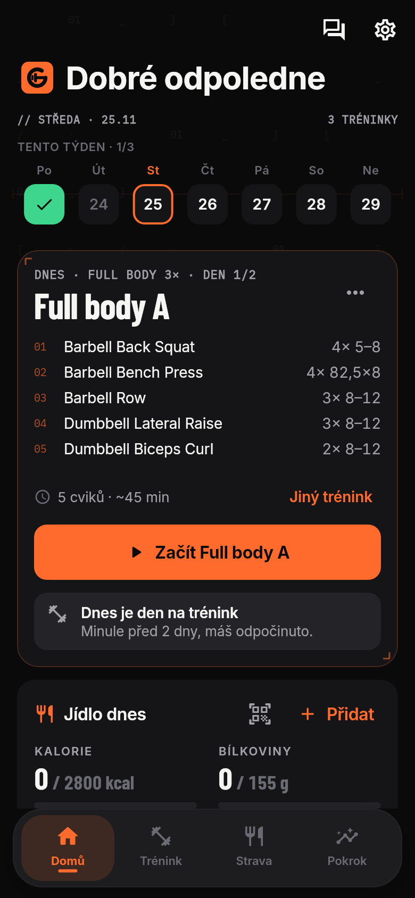
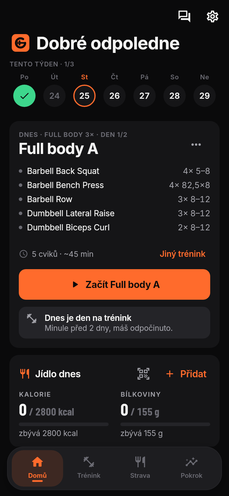

<!doctype html><html lang="en"><meta charset="utf-8"><meta name="viewport" content="width=device-width,initial-scale=1"><title>Home technical styling</title><style>
body{margin:0;color:var(--foreground);font:14px var(--font-sans,system-ui)}nav{display:flex;justify-content:center;gap:8px;margin-bottom:12px}button{font:inherit;padding:8px 16px;border:1px solid var(--border);border-radius:var(--radius,8px);color:var(--foreground);background:var(--secondary);cursor:pointer}button[aria-pressed=true]{outline:2px solid var(--primary);outline-offset:-2px}button:focus-visible{outline:2px solid var(--ring);outline-offset:2px}figure{margin:0 auto;max-width:360px}img{width:100%;height:auto;display:block;border-radius:18px}img[hidden]{display:none}figcaption{font-size:12px;text-align:center;color:var(--muted-foreground);margin-top:10px;line-height:1.5}
</style><nav aria-label="Design version"><button data-phase="after" aria-pressed="true">After</button><button data-phase="before" aria-pressed="false">Before</button></nav><figure><figcaption>Actual Flutter renders. The live app adds slow background motion.</figcaption></figure><script>document.querySelectorAll('button').forEach(b=>b.addEventListener('click',()=>{document.querySelectorAll('button').forEach(x=>x.setAttribute('aria-pressed',x===b));document.querySelectorAll('img').forEach(x=>x.hidden=x.dataset.phase!==b.dataset.phase)}));</script></html>